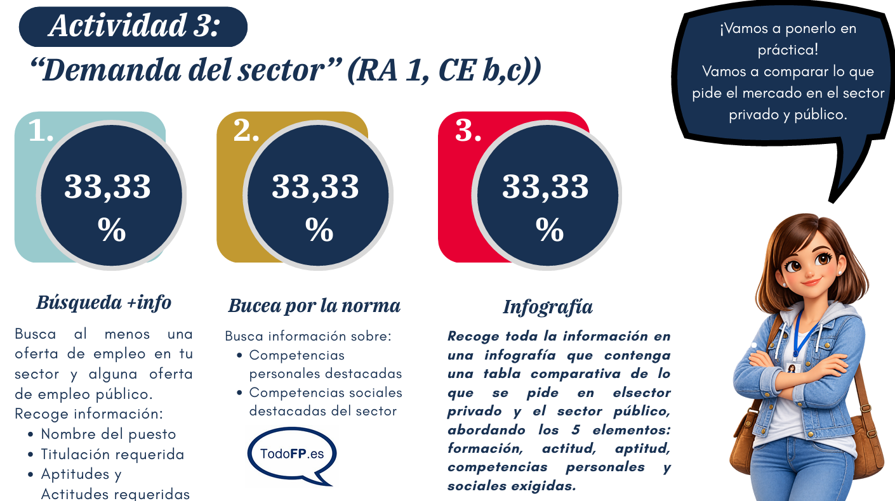

Operador/a de Sistemas (Presencial)
BOYCOR · Antequera (Málaga)
- Contrato: indefinido, jornada completa
- Salario: 23.000 € - 24.000 € bruto/año
- Experiencia mínima: 2 años
- Titulación: Ciclo Formativo de Grado Superior
- Sector: otras actividades
RA 1 · CE b,c) · IPE Unidad 01
Comparativa entre las exigencias del sector privado y del sector público para el perfil ASIR.
← Volver a IPEBOYCOR · Antequera (Málaga)
Oferta Pública de Empleo · Año 2026
Para acceder a un puesto en el sector público, además de una titulación, es obligatorio pasar por un proceso de selección que implica hacer un examen y superar un proceso adjudicatorio.
En las ofertas públicas no siempre se especifican las aptitudes y actitudes que necesitas. El sector tecnológico evoluciona muy rápido, por lo que es vital mantenerse activo en el aprendizaje para seguir siendo competitivo.

Documentación completa de la actividad en formato PDF: